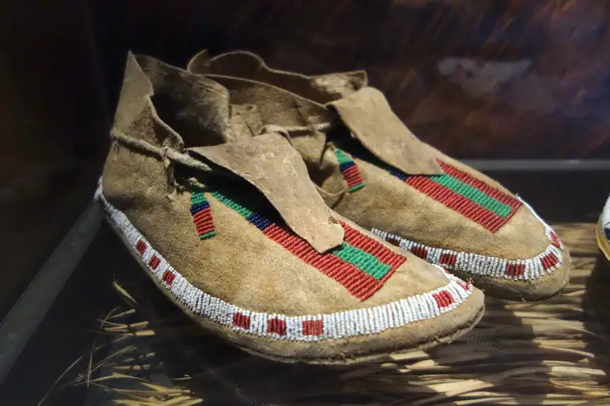

In the summertime, the sidewalk in front of our state’s only abortion facility brings a proliferation of just about everything.
The numbers of people gathered there recently startled me as I approached one late morning. Along with the abortion escorts in their blue vests at every corner, a pooling of prayer advocates had spread out, dotting the length.
Among the latter was a group who’d traveled from northern Minnesota; a family from rural North Dakota with their large brood; two young women who’d painted the sidewalk with colorful chalk messages like, “Be brave for your baby;” the mother with her three kiddos spread out on a blanket with toys and prayer beads; the usual rosary-wielding warriors and their pals with the pro-life leaflets; men with signs sidewalk-shielding; a couple with a baby in a stroller sucking on tubed applesauce; and a young man in sneakers and jeans, gripping his Bible and a microphone, speaking truth into the tense air.
Beyond this, patrons of nearby eateries sat casually in iron patio furniture just inches away, consuming their beers and burgers, outwardly unmoved by the revolting reality next door.
I remember thinking, at one point, while eyeing the many different personalities there that day, “Every single person here was once as vulnerable and small as the children who will die here today. And here we all are, having been given life. How vain of any of us to think that we deserved life and these others do not. No matter the circumstances of their conception, why is their right to breathe this air denied?”
Adding to the color that morning was a couple of escorts who, it seemed clear, were Native American. The beautiful beadwork on their keychains and clothes and the woman’s moccasins brought me back to my growing-up years on the Fort Peck Reservation in northeast Montana.

Seeing them standing there with nervous smiles, my heart sank. I cannot escape how I grew up, nor would I want to, for it was on the reservation, a white girl among the Lakota and Assiniboine peoples, that I learned some of the most meaningful truths about life.
Ours was one of the most poverty-stricken areas of the country. For many, it was a desolate, despairing existence. And yet, through the haze of hemp, something else emerged loud and clear—a love for family and deep honoring of life.
I credit my time there, along with my father’s large Catholic family of origin, for my own openness to life. As the second daughter of two children, I yearned to have the kind of bounteous relationships I saw all around me. Though lacking in material wealth, many there were rich in spiritual abundance, cultivated mostly in their relationships.
My heart will always feel especially tender toward the Native people. I owe them a great debt for the truths I witnessed, even if not always lived out easily. I pray for them often and am grateful for the friends who remain friends to this day.
I’ve spoken to many of them, walking past, who’ve shared their pro-life convictions, which makes what I saw that day even more troubling. It seems some in the Native community have bought into the culture of death deception that has taken so much from them already.
I’d guess this acquiescence comes mainly from fear; logical fear perhaps, based on the unfortunate poverty this community has experienced, but it does not match the truth of the best things I learned from the reservation: our wealth is in our people, and God will provide if we place our trust in him.
We have so much work to do to turn this culture around and help people feel hopeful enough about their circumstances that they would know they are being cared for and are not alone in difficult situations, that a community surrounds them, and that they do not have to choose death of their youngest in order to survive.
I urge the Native community, especially Catholics, not to go silent right now, even if it seems you are going against your loved ones. Remind them of their value and strength. Each of you are survivors of life, and we need your voices and the goodness you bring to our world.
Summertime on the sidewalk brings out a little bit more of everything than what we see in other seasons. I hope everyone, of all color, who sees the truth will join us in prayer. The sidewalk becomes busier in the summer, but there is always room for more.
[Note: I write about my experiences on the sidewalk Downtown Fargo on Wednesday, the day abortions happen at our state’s only abortion facility, for New Earth magazine — the official news publication of the Fargo Diocese. I hope you find “Sidewalk Stories” helpful in understanding the truth about abortion and how it plays out tragically each week here in Fargo, N.D. The preceding ran in New Earth’s July/August 2019 issue.]